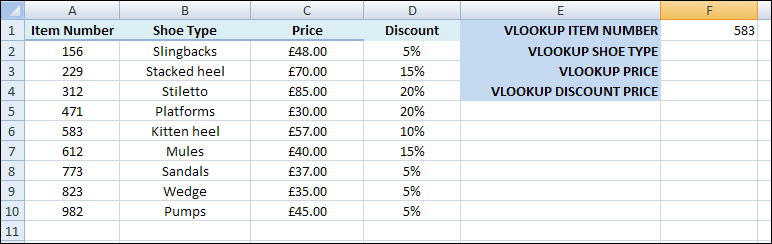

Free
computer Tutorials
|
Free
computer Tutorials
|
|
 HOME HOME
|
|
||||
Microsoft Excel 2007 to 2010The VLOOKUP FunctionIn the previous section, you learned about the LOOKUP function in Excel. There's another type of LOOKUP function you can use, however, called the VLOOKUP (there's also an HLOOKUP, but we won't cover that). VLOOKUP is used to search the first column of your spreadsheet for a value. If the value is found you can return data from any cell in that row. The VLOOKUP function needs three pieces of information, separated by commas. (You can also add an optional fourth value, which we'll see in a moment) LOOKUP(value_to_lookup, data_to_search, results_column,
[match_case]) To illustrate VLOOKUP, create the following spreadsheet (or you can use the same one from the previous section).  Notice that the data in the first column, Item Number, is sorted lowest to highest. If you don't sort your data then LOOKUPS can give you problems. The item number we want to look up is in cell F1, and is a value of 583. We can use VLOOKUP to return the Shoe Type associated with item number 583. Click inside cell F2 to select it, then click inside the formula bar at the top. Enter the following formula: =VLOOKUP(F1, A2:C10, 2) Press the enter key on your keyboard when you have finished typing the formula. You should find the a value of "Kitten heel" is returned. So the value we want to search for is in F1. The data we want to search is the cells A2 to C10. The column that needs to be returned is column 2. When Excel finds the 583 it sees that this on row 6. The value in Row 6, column 2 is what VLOOKUP returns its answer. As was mentioned, you can add a fourth argument after the column number. This argument is either TRUE or FALSE and has to do with matching values from what you are searching for (the F1 for us). If you enter a value of TRUE (the default) then Excel looks for an exact match. If no exact match is found, it settles for the next lowest value. As an example, enter 580 in cell F1. When you press enter you should see "Platforms" appear in cell F2. Because we left off a value of TRUE or FALSE as the fourth argument it defaults to TRUE. When Excel can't find a value of 580 it looks at the next value lower than 580, which is 471 for us. This is on Row 5. Row 5, column 2 is "Platforms". Now click in cell F2 to highlight it. Click inside the formula bar and amend your function to this: =VLOOKUP(F1, A2:C10, 2, FALSE) All we've done is added FALSE on the end, but after a comma. Press the enter key on your keyboard and Excel gives you N/A error. It does this because FALSE means "find an exact match". Because we didn't have a value of 580 an error is returned. Change FALSE to TRUE and try again. You get Platforms as an answer. Now change the 580 in cell F1 to 150. When you press enter, cell F2 shows the N/A error again. This time, the error occurs because 150 is smaller than the smallest value we have for Item Number. Change the value in cell F1 to 612. Hit the enter key and you'll find that "Mules" appears in cell F2.
Calculations with VLOOKUPYou can use VLOOKUP to do some calculations for you. Suppose we wanted to work out the discount price for Mules. We can use VLOOKUP to get the price then multiply by its discount value in the D column. First, click into cell F3 to select it. Click into the formula bar and enter the following: =VLOOKUP(F1, A2:C10, 3, FALSE) When you press the enter key, you should find that a value of £40 appears in cell F3. The discount for the Shoe Type mules is 15%. We can use a second VLOOKUP to calculate how much the shoes would be if the 15% discount is applied. Click into cell F4. Click into the formula bar and enter the following: =VLOOKUP(F1, A2:D10, 3, FALSE) * (1 - VLOOKUP(F1, A2:D10, 4, FALSE) ) So we now have the VLOOKUP function twice. The first one gets the value in column 3. This is the Price of the shoes. The second one gets the value from column 4, which is the discount. The result from the first VLOOKUP (£40) is then multiplied by the result of the second VLOOKUP (15%). When you press enter on your keyboard a value of £34 should be returned - the price minus the discount. Using VLOOKUP for calculations can be quite tricky, but they are worth getting the hang of as mastering them will bring your Excel skills on a treat!
In the next section, you'll learn how to create an excel template. |
|||||
|
|||||